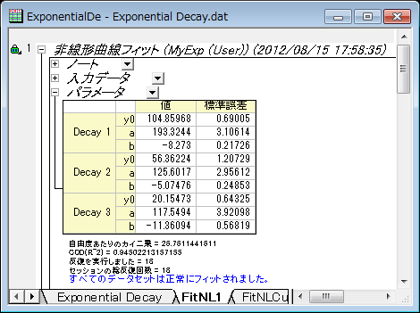

複数のデータセットで一つのフィットを行い、そのパラメータを使って他のデータセットのフィットを行う
Fitting-MultiDataset
サマリー
複数のデータセットがあり、それをユーザ定義関数でフィットする時に、パラメータ初期コードを使わずにフィットしたいこともあるでしょう。効率を上げるために、1つのデータセットをフィットした後に他のデータセットにパラメータを当てはめる事ができます。
必要なOriginのバージョン: Origin 8.6 以降
学習する項目
このチュートリアルでは、以下の項目について説明します。
- フィット関数ビルダーでフィット関数を作成する
- 独立フィットを行う
- 複数のデータセットのうち1つのフィットを1回反復と完全反復する
- 1つのデータセットのパラメータを他のデータセットに適用する
ステップ
フィット関数ビルダーを使用してユーザ定義関数を作成する
フィット関数ビルダーは、ユーザ定義関数の作成と編集に使用します。以下のセクションでは、このツールを使用してフィット関数MyExp を作成します。
- メインメニューからツール: フィット関数ビルダー を選択、もしくはF8キーを押してフィット関数ビルダーダイアログを開きます。新しい関数の作成のラジオボタンを選択します。
- 進むをクリックし、関数名と関数形式ページに移動します。関数名ボックスにMyExp と入力し、関数形式の中でOriginCのラジオボタンを選択します。

- 進むをクリックし、変数とパラメータページに移動します。次のスクリーンショットのように変数とパラメータを入力します。
- 進むをクリックし、OriginCフィット関数ページに移動します。関数内容のボックスに、関数の内容 y=y0+a*exp(b*x) を入力します。関数の正確性を確認するために、関数ボックスの隣にあるボタンをクリックしてOriginコードビルダを開きます。
- 開いたコードビルダで、コンパイルボタンをクリックして関数をコンパイルします。コンパイル完了のメッセージが表示されるので、ダイアログに戻るボタンをクリックしてフィット関数ビルダーに戻ります。
- 完了ボタンをクリックして関数MyExp の定義を終了します。
ユーザ定義関数を使用して、複数データセットをフィットする
- Originのワークシートに \Samples\Curve Fitting\Exponential Decay.dat をインポートします。
- 全ての列を選択し、メニューから解析： フィット： 非線形曲線フィットと操作し、NLFitダイアログを開きます。
- 設定タブの関数選択ページで、定義した関数を選択します。
- パラメータタブに切り替え、1番目のデータセットでy0, a, bの初期値として、値列に80, 100, -5をそれぞれ入力します。独立フィットのドロップダウンリストから1を選択し、そのまま1番目のデータセットを収束まで反復します。
- パラメータ値が計算され、フィットの結果がこのダイアログの左角にヒントとして表示されます。
- 他のデータセットのパラメータを初期化するには1つ目のデータセットのパラメータを他のデータセットに当てはめます。値を右クリックし、"値"の全体をすべてのデータセットに適用するをコンテキストメニューから選びます。
- フィットボタンをクリックして、全てのデータセットのフィットを実行します。
- 